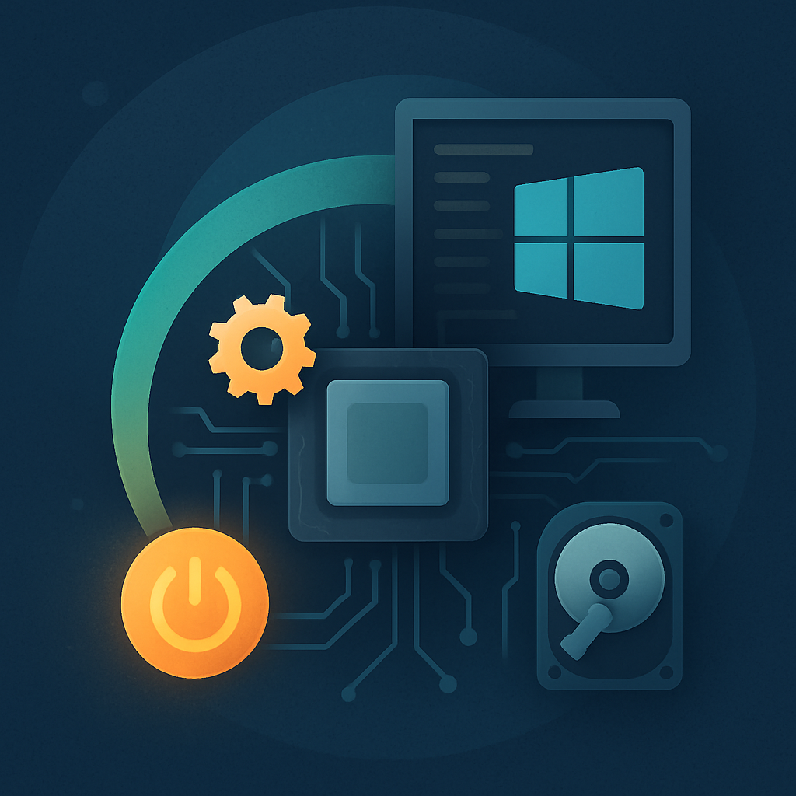

We believe security software like Kicksecure needs to remain Open Source and independent. Would you help sustain and grow the project? Learn more about our 14 year success story and maybe DONATE!
Secure BootDocumentationsystemcheckPrevious page: Secure BootIndex page: DocumentationNext page: systemcheckBoot Firmware

This page serves as a comprehensive guide for understanding Kicksecure's boot compatibility with BIOS, EFI, SecureBoot, and coreboot. It provides users with the necessary information to make informed decisions regarding firmware setup for optimal system functionality.
Introduction
This document outlines the compatibility of Kicksecure with various boot firmware systems, including BIOS, EFI, SecureBoot, and coreboot. It provides insights into the technical aspects of each option and offers recommendations based on the system's configuration. Additionally, it highlights potential challenges and solutions related to system migration and SecureBoot implementation.
 Documentation for this is incomplete. Contributions are happily
considered! See this for
potential alternatives.
Documentation for this is incomplete. Contributions are happily
considered! See this for
potential alternatives.
Kicksecure BIOS Boot Compatibility
Kicksecure is compatible with BIOS. Switching to EFI is optional.
Kicksecure EFI Boot Compatibility
Kicksecure is compatible with EFI. Disabling EFI is optional.
Kicksecure SecureBoot Compatibility
Kicksecure is compatible with SecureBoot. Disabling SecureBoot is optional.
However, if the user keeps SecureBoot enabled, then DKMS key enrollment is recommended, which is documented on the Secure Boot wiki page.
Kicksecure coreboot Compatibility
Untested. But if coreboot is compatible with Debian on the motherboard, then Kicksecure should also be functional.
BIOS vs EFI
Some motherboards only support BIOS and do not yet have EFI support. Others support only EFI and no longer have BIOS support.
Some motherboards support both, BIOS and EFI. The user can choose either in the firmware setup.
What should be preferred? If only one option is available, use whatever is available.
What if the user can select BIOS versus EFI?
EFI (Extensible Firmware Interface) is significantly more complex than BIOS (Basic Input/Output System). One key difference is EFI's reliance on NVRAM (Non-Volatile Random-Access Memory), which functions similarly to a hard drive but is actually a chip integrated into the computer's motherboard.
In BIOS-based systems, all information required to boot the system could be stored on an external device, such as a USB hard drive. EFI, however, operates differently. It typically writes part of the essential boot information to the NVRAM, which is specific to each motherboard.
This architectural difference has important implications for system migration. When a user wants to transfer their hard drive from one computer to another (due to hardware issues or upgrades, for example), they may encounter problems. Unlike with BIOS systems, an EFI-based hard drive will likely be unbootable on the new hardware because it lacks the specific NVRAM data from the original motherboard.
Kicksecure's ISO installer (based on Calamares) attempts to mitigate this issue. [1]
EFI comes with a lot more challenges for Linux distributions. See footnote for details. [2] Among these challenges is Secure Boot. See Secure Boot user documentation and Complexities and security concerns of Secure Boot in the context of Linux distributions.
forum discussion: BIOS vs EFI vs coreboot vs libreboot
https://www.bleepingcomputer.com/news/security/pkfail-secure-boot-bypass-lets-attackers-install-uefi-malware/
SeaBIOS is not a Legacy BIOS
Calling SeaBIOS "legacy" is somewhat misleading. Here's why:
1. SeaBIOS is actively maintained modern software that happens to implement the traditional BIOS interface. It's not outdated code from the 1980s.
2. The "legacy" part refers to the interface it provides (16-bit real mode boot interface) rather than the code quality or capabilities.
3. SeaBIOS has several advantages:
- Very stable and well-tested
- Simple and lightweight
- Highly compatible with existing operating systems and boot loaders
- Open source and easily debuggable
- Fast boot times
4. While UEFI offers some additional features (like secure boot, GUI setup, networking), many of these aren't essential for most users. The traditional BIOS interface remains perfectly functional for its core purpose - initializing hardware and booting the OS.
5. SeaBIOS is still widely used in virtualization (QEMU/KVM uses it by default) because it's reliable and efficient.
So while "legacy" technically describes the interface type, it shouldn't be taken as meaning "obsolete" or "inferior." It's more accurate to think of SeaBIOS as a modern implementation of a classic interface. "Legacy" here really refers to its design lineage rather than its utility or reliability.
SeaBIOS versus EFI
prerequisite knowledge:
- stateless computer - State considered harmful - A proposal for a stateless laptop
1. Codebase Size & Complexity
- SeaBIOS: SeaBIOS is a minimal BIOS implementation with roughly 50K lines of code. This smaller codebase means it's simpler, easier to audit, and has fewer opportunities for security vulnerabilities or backdoors. SeaBIOS is also aligned with the idea of minimizing system state, akin to Joanna Rutkowska's "Stateless Notebook" concept, where simplicity is favored for security.
- EFI (UEFI): UEFI is significantly more complex, involving millions of lines of code. This increased complexity opens up more possibilities for bugs, vulnerabilities, or intentional backdoors. The large attack surface also makes it more challenging to perform a comprehensive security audit.
2. Secure Boot & Measured Boot
- EFI: EFI offers features like Secure Boot and Measured Boot, but these features add complexity. Moreover, Secure Boot, although it enhances the security model, can also be misused or introduce backdoors if not properly implemented. Projects like Dasharo aim to bring transparency and security to UEFI, but it's inherently more complicated than SeaBIOS.
- SeaBIOS: It lacks the sophisticated boot integrity features found in EFI, such as Secure Boot or Measured Boot. However, this simplicity means it's easier to verify and audit the boot process.
3. Stateless Nature
- SeaBIOS: The absence of NVRAM storage and limited state retention make SeaBIOS closer to a "stateless" system, which is beneficial from a security standpoint, reducing persistence mechanisms that an attacker could leverage.
- EFI: UEFI systems use NVRAM for storing boot settings and variables, introducing state that could be manipulated maliciously. This statefulness is a trade-off, adding functionality but increasing potential vulnerabilities.
4. Security Trade-Offs
- SeaBIOS aligns more with a "less is more" security model, minimizing attack surface by reducing features.
- EFI provides additional layers of security features like Secure Boot, but these features come with significant complexity and increased risks, requiring more diligent auditing to ensure no vulnerabilities are introduced.
Overall, if the goal is to reduce risk through simplicity and auditability, SeaBIOS is a better fit. If, however, the priority is to add layers of security (assuming the complexity can be effectively managed and trusted), EFI with Secure Boot and Measured Boot might be preferred.
Coreboot + SeaBIOS can be not only sufficient but even preferable. So, while it may not have some of the bells and whistles of UEFI, it's definitely not "bad" by any stretch.
SeaBIOS:
- SeaBIOS, with its minimal codebase, reduces the risk of backdoors and makes it resilient against certain remote attacks, though it lacks protection against physical attacks like tampering with the bootloader.
- SeaBIOS, on the other hand, is designed to be simpler and stateless, which makes it harder for an attacker to maintain a persistent presence, as there is no stored configuration that survives reboots. This makes SeaBIOS generally more resilient against persistent compromise.
EFI:
- EFI provides stronger defenses against remote attacks through features like Secure Boot and Measured Boot, but its increased complexity introduces a higher risk of backdoors and makes it more vulnerable to physical attack vectors involving its persistent state.
- EFI is more vulnerable to persistent compromise compared to SeaBIOS. EFI maintains state using NVRAM to store configuration and boot data, which can be modified by attackers to maintain persistence even across reboots. Additionally, EFI's larger codebase and complexity make it harder to audit, increasing the chances of undetected vulnerabilities that could facilitate a persistent compromise.
For typical online end users, remote attacks exploiting firmware vulnerabilities are more realistic against EFI than SeaBIOS due to EFI's complexity and larger attack surface. Attacks like firmware malware (rootkits or bootkits) that exploit bugs in EFI can persist across reboots, especially since EFI features stateful NVRAM.
On the other hand, physical attacks, like modifying firmware settings or implanting malicious bootloaders, are generally less common for most users unless they are high-value targets with attackers capable of gaining physical access.
For SeaBIOS users, attacks that focus on exploiting weaknesses in Secure Boot or similar protections are less relevant because those features aren't present, but the absence of these protections means physical attacks or tampering with the bootloader is more straightforward if an attacker has physical access.
If the goal is just data stealing, physical attacks like firmware tampering are unlikely, as methods like cameras or microphones are more practical to still any full disk encryption password. However, if persistent control is desired, such as manipulating system behavior or compromising critical infrastructure, tampering with the boot firmware makes more sense, making boot firmware verification crucial in such cases.
Instead of tampering with the any firmware or hard drive contents, adversaries might also deploy much simpler techniques such as hardware implants such as hardware based keyloggers. For example, by implanting the keyboard with a malicious chip that logs or leaks all keystrokes.
TODO: versus https://docs.dasharo.com/dasharo-menu-docs/dasharo-system-features/
See Also
Footnotes
Categories: Documentation